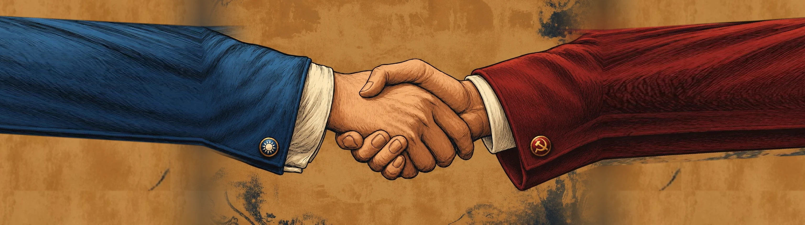
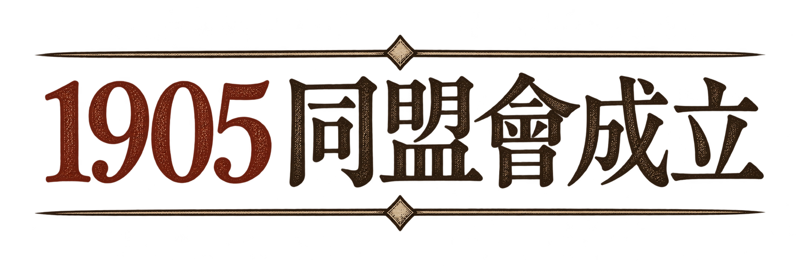
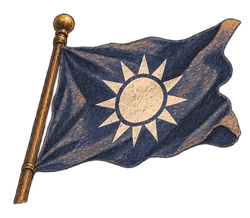
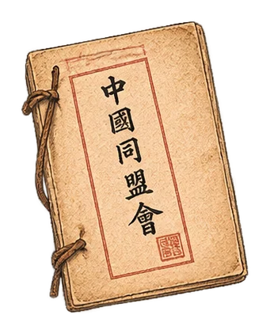
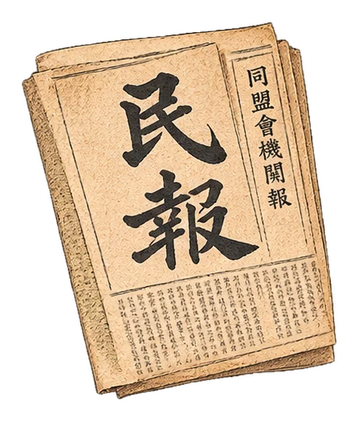
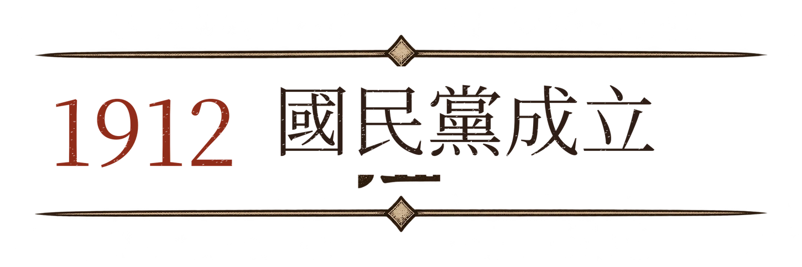
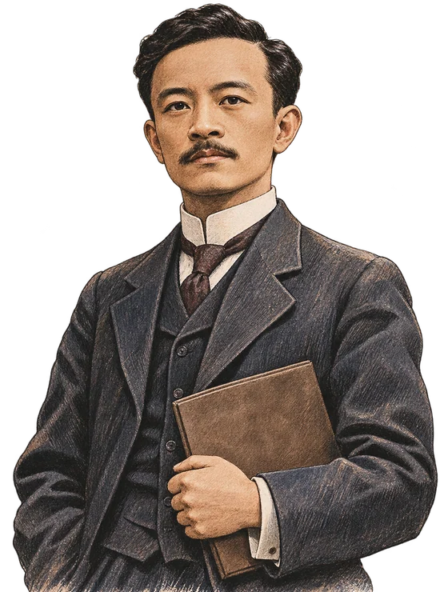

兩條政治道路，在1924年走向第一次合作


孫中山 ｜革命領導者（插畫）


◆1905年，孫中山在日本東京聯合革命團體，成立中國同盟會。
◆革命綱領：驅除韃虜、恢復中華、創立民國、平均地權。
◆意義：整合革命力量，為日後推翻清朝奠下基礎。

插畫只作視覺輔助；原始史料可點擊查看來源


孫中山支持政黨改組
宋教仁推動政黨合併
同盟會＋其他四個政團→國民黨
◆背景：辛亥革命後，中華民國成立，革命團體開始走向公開政黨政治。
◆經過：宋教仁推動同盟會聯合其他四個政團，1912年8月25日在北京成立國民黨。
◆宗旨：「鞏固共和，實行平民政治」，希望透過議會政治發揮影響力。

原始歷史肖像連線後載入 · 點按查看
宋教仁肖像歷史照片｜Wikimedia Commons

1912年真實合照連線後載入 · 點按查看
南京臨時參議院1912年1月 · 議會政治背景，非國民黨成立大會
左側人物屬歷史風格插畫；下方兩張史料照片可按開啟原始來源
1905
同盟會
1912
國民黨
1914
中華革命黨
1919
中國國民黨